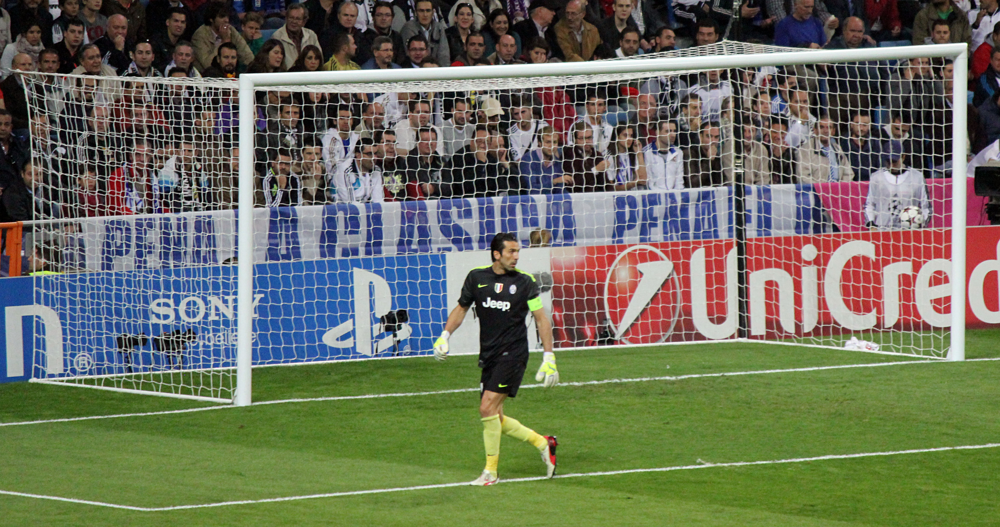

Gianluigi Buffon pertence ao grupo restrito de jogadores cuja importância ultrapassa a quantidade de partidas, títulos e recordes acumulados. Durante quase três décadas, o italiano permaneceu em alto nível, atravessou diferentes gerações e se tornou uma referência técnica e emocional para clubes, companheiros e torcedores.
Buffon não ficou marcado por reinventar a posição de maneira radical. Seu impacto veio de uma combinação mais clássica e igualmente difícil de reproduzir: posicionamento, reflexos, força nos confrontos individuais, liderança da defesa e regularidade. Mesmo quando a idade reduziu parte de sua explosão física, a leitura das jogadas e a experiência permitiram que continuasse competitivo.
A carreira profissional começou em 1995 e terminou em 2023, no mesmo clube. Entre as duas passagens pelo Parma, Buffon construiu a maior parte de sua história na Juventus, teve uma experiência no Paris Saint-Germain e defendeu a Itália em cinco Copas do Mundo. Ao se aposentar, deixou o campo como recordista de partidas na Serie A e jogador com mais atuações pela seleção italiana.
O início da carreira
Gianluigi Buffon nasceu em 28 de janeiro de 1978, em Carrara, na região da Toscana. Sua formação no futebol aconteceu no Parma, clube ao qual chegou ainda adolescente. Inicialmente utilizado em outras funções durante a juventude, encontrou no gol o espaço que definiria sua vida esportiva.
A estreia profissional aconteceu em 19 de novembro de 1995. Com apenas 17 anos, Buffon foi escalado contra o Milan, então uma das equipes mais fortes da Europa. O Parma empatou por 0 a 0, e o jovem goleiro chamou atenção pela segurança diante de jogadores experientes e consagrados.
Aquela partida não representou apenas uma oportunidade isolada. Buffon conquistou espaço rapidamente e passou a integrar uma geração histórica do Parma, que também contava com nomes como Fabio Cannavaro, Lilian Thuram, Roberto Sensini, Juan Sebastián Verón, Hernán Crespo e Enrico Chiesa.
Aos poucos, o goleiro transformou a potência física em controle técnico. Tinha impulsão, coragem nas saídas e reflexos rápidos, mas também mostrava maturidade para organizar a defesa e enfrentar atacantes no um contra um. O impacto precoce fez com que deixasse de ser uma promessa para se tornar um dos principais goleiros do Campeonato Italiano.
A temporada histórica
O primeiro grande período de títulos aconteceu na temporada 1998/99. O Parma tinha um dos melhores elencos de sua história e terminou o ano com três conquistas: a Copa da Uefa, a Copa da Itália e, posteriormente, a Supercopa da Itália.
Na decisão da Copa da Uefa, disputada em Moscou, o Parma derrotou o Olympique de Marselha por 3 a 0. Crespo, Paolo Vanoli e Chiesa marcaram os gols da conquista. Buffon não sofreu gols e completou uma campanha continental que consolidou o clube italiano entre as principais forças da Europa naquele período.
Na Copa da Itália, o título veio diante da Fiorentina. Depois de um empate por 1 a 1 em Parma, as equipes ficaram no 2 a 2 em Florença, e o time de Buffon foi campeão pelo critério dos gols marcados fora de casa. A temporada ainda foi completada com a vitória sobre o Milan na Supercopa da Itália.
O desempenho daquele Parma ajudou a construir a reputação internacional de Buffon. Antes mesmo de completar 22 anos, ele já era titular de uma equipe campeã na Itália e na Europa, além de integrante da seleção italiana. Participou diretamente de três dos troféus mais importantes da história do clube.
A transferência histórica
Em 2001, Buffon foi contratado pela Juventus. A negociação foi fechada por cerca de 52 milhões de euros, valor que permaneceu durante muitos anos como o maior já pago por um goleiro. A transferência representava uma responsabilidade enorme: substituir Edwin van der Sar e assumir o gol de um dos clubes mais tradicionais do futebol europeu.
A adaptação foi rápida. Logo na primeira temporada, a Juventus conquistou o Campeonato Italiano em uma rodada final dramática. A Inter de Milão iniciou o último dia na liderança, mas perdeu para a Lazio, enquanto o time de Buffon venceu a Udinese e ficou com o título.
A equipe repetiu a conquista da Serie A em 2002/03 e chegou à final da Liga dos Campeões. A decisão contra o rival Milan, em Old Trafford, terminou empatada por 0 a 0 e foi definida nos pênaltis. Buffon defendeu duas cobranças, mas a Juventus perdeu por 3 a 2.
Mesmo sem o troféu europeu, a campanha confirmou o italiano entre os melhores goleiros do planeta. Em 2003, ele foi eleito pela Uefa o melhor goleiro e o melhor jogador das competições europeias da temporada, tornando-se o primeiro atleta da posição a receber a principal premiação da entidade naquele formato.
O estilo debaixo das traves
Buffon construiu sua excelência a partir de fundamentos tradicionais da posição. Não dependia exclusivamente de defesas plásticas ou de movimentos espalhafatosos. Sua maior qualidade estava em tornar jogadas difíceis aparentemente simples.
O posicionamento reduzia o espaço disponível para os atacantes. Em finalizações próximas, ele ampliava o corpo e reagia rapidamente. Nos chutes de média distância, mantinha equilíbrio para realizar a defesa sem oferecer rebotes perigosos. Também se destacava nas saídas pelo chão, utilizando o tempo de ação para chegar antes do adversário.
A liderança era outro elemento central. Buffon orientava a linha defensiva, cobrava concentração e transmitia segurança. Seu comportamento ajudou a organizar sistemas que contaram com zagueiros como Cannavaro, Thuram, Giorgio Chiellini, Leonardo Bonucci e Andrea Barzagli.
Diferentemente de goleiros identificados por uma participação constante longe da área, Buffon não tinha como principal característica atuar como líbero. Ainda assim, possuía técnica suficiente para circular a bola e iniciar jogadas. Seu impacto vinha principalmente da leitura dos riscos, da tomada de decisão e da capacidade de manter o rendimento em jogos de enorme pressão.
Nesse sentido, sua trajetória oferece outro caminho dentro da evolução da posição. Enquanto a carreira de Manuel Neuer como goleiro-líbero ficou associada às antecipações e à presença longe da meta, Buffon tornou-se referência pela eficiência clássica, pela autoridade dentro da área e pela consistência ao longo de quase três décadas.
A conquista do Mundial
O maior título da carreira de Gianluigi Buffon foi conquistado na Copa do Mundo de 2006, na Alemanha. A Itália chegou ao torneio cercada pela crise provocada pelo escândalo conhecido como Calciopoli, que abalava os principais clubes do país.
Dentro de campo, porém, a seleção comandada por Marcello Lippi apresentou uma das defesas mais eficientes da história das Copas. Buffon disputou os sete jogos, ficou cinco vezes sem sofrer gols e foi vazado apenas duas vezes durante toda a competição. Um dos gols foi contra, marcado por Cristian Zaccardo diante dos Estados Unidos; o outro saiu em um pênalti cobrado por Zinedine Zidane na final.
A Itália avançou em primeiro lugar no grupo, eliminou Austrália, Ucrânia e Alemanha e chegou à decisão contra a França. No Estádio Olímpico de Berlim, Zidane abriu o placar e Marco Materazzi empatou ainda no primeiro tempo.
Na prorrogação, Buffon realizou a defesa mais importante de sua carreira. Zidane recebeu um cruzamento e cabeceou com força, mas o goleiro italiano conseguiu tocar na bola e desviá-la por cima do travessão. Sem a intervenção, a França poderia ter assumido a vantagem em um momento decisivo.
O empate por 1 a 1 levou a final aos pênaltis. A Itália converteu as cinco cobranças e venceu por 5 a 3. Buffon levantou a Copa do Mundo e recebeu o prêmio de melhor goleiro do torneio. A campanha também o levou ao segundo lugar na votação da Bola de Ouro de 2006, atrás do companheiro Fabio Cannavaro.
A campanha durante a Serie B
Pouco depois da Copa do Mundo, a Juventus foi rebaixada administrativamente para a Serie B em consequência do Calciopoli. O clube perdeu os títulos das temporadas 2004/05 e 2005/06: o primeiro foi revogado, e o segundo não foi atribuído à equipe.
Buffon, recém-campeão mundial e valorizado internacionalmente, tinha condições de seguir em outro grande clube europeu. Mesmo assim, decidiu permanecer. Ao lado de jogadores como Alessandro Del Piero, Pavel Nedved, David Trezeguet e Mauro Camoranesi, disputou a segunda divisão.
A escolha fortaleceu definitivamente sua relação com a torcida. A Juventus conquistou a Serie B de 2006/07, apesar de iniciar a competição com uma punição em pontos, e retornou imediatamente à elite.
A permanência naquele momento transformou Buffon em algo maior do que um grande goleiro contratado. Ele passou a representar a reconstrução esportiva e institucional do clube, tornando-se uma das principais referências de identidade da Juventus.
A era de domínio
Depois de alguns anos sem conquistar a Serie A, a Juventus iniciou uma sequência histórica na temporada 2011/12. Sob o comando de Antonio Conte, o clube foi campeão italiano de forma invicta.
Buffon era um dos líderes de uma equipe baseada em intensidade, organização defensiva e competitividade. Nas temporadas seguintes, a Juventus manteve o domínio nacional, primeiro com Conte e depois com Massimiliano Allegri.
Em 2015/16, Buffon estabeleceu outro recorde expressivo. Permaneceu 974 minutos sem sofrer gols na Serie A, superando a marca anterior do campeonato. A sequência foi construída em uma fase na qual a Juventus venceu 15 partidas consecutivas e recuperou uma grande desvantagem na classificação.
O recorde mostrou como o goleiro conseguia se manter decisivo mesmo depois dos 35 anos. O trabalho coletivo da defesa era fundamental, mas Buffon continuava aparecendo nos momentos em que o adversário conseguia superar a estrutura do time.
A grande frustração
Buffon conquistou praticamente todos os títulos possíveis por clubes e seleção, mas não conseguiu vencer a Liga dos Campeões. A ausência da taça europeia tornou-se a principal frustração de sua carreira.
Além da derrota para o Milan em 2003, ele voltou à final em 2015. A Juventus enfrentou o Barcelona em Berlim e perdeu por 3 a 1. Buffon realizou defesas importantes, mas não conseguiu impedir os gols de Ivan Rakitić, Luis Suárez e Neymar.
Em 2017, a Juventus chegou novamente à decisão, desta vez contra o Real Madrid, em Cardiff. Depois de um primeiro tempo equilibrado e encerrado em 1 a 1, a equipe espanhola dominou a etapa final e venceu por 4 a 1.
Buffon terminou a carreira com três finais de Champions e três derrotas. É um dos jogadores que mais vezes disputaram a decisão sem conquistar o título. A lacuna, no entanto, não reduz seu peso na competição: foram mais de 100 jogos no torneio e diversas campanhas nas quais esteve entre os principais responsáveis pelo avanço da Juventus.
A passagem por Paris
Em 2018, ele encerrou sua primeira passagem pela Juventus e assinou com o Paris Saint-Germain. Aos 40 anos, viveu sua única temporada fora do futebol italiano.
No clube francês, dividiu a posição com Alphonse Areola e disputou 25 partidas. Conquistou o Campeonato Francês e a Supercopa da França, mas o PSG foi eliminado pelo Manchester United nas oitavas de final da Liga dos Campeões.
A experiência durou apenas uma temporada. Em 2019, Buffon retornou à Juventus, agora com um papel diferente. Wojciech Szczęsny havia assumido a titularidade, e o italiano passou a atuar como reserva, líder do elenco e opção para determinadas competições.
O retorno à Turim
Mesmo sem ser o titular absoluto, Buffon continuou somando partidas e recordes. Em julho de 2020, superou Paolo Maldini e tornou-se o jogador com mais partidas na história da Serie A.
Ao encerrar sua passagem pelo campeonato, chegou a 657 jogos na primeira divisão italiana. O número reuniu partidas disputadas por Parma e Juventus e consolidou uma marca construída ao longo de quatro décadas diferentes.
Buffon deixou definitivamente a Juventus em 2021. Sua última partida pelo clube aconteceu na final da Copa da Itália contra a Atalanta. A Juventus venceu por 2 a 1, e o goleiro encerrou a passagem com mais um título.
Foram 685 partidas oficiais pela equipe de Turim, o segundo maior número da história do clube, atrás apenas de Alessandro Del Piero. Buffon defendeu a Juventus em duas passagens, de 2001 a 2018 e de 2019 a 2021.
A volta as origens e o encerramento da carreira
Em 2021, Buffon decidiu retornar ao Parma. O clube estava na Serie B, mas a condição não representava um impedimento para quem já havia permanecido na Juventus após um rebaixamento.
O retorno fechava um ciclo iniciado em 1995. Buffon voltou ao estádio Ennio Tardini como um jogador consagrado, campeão mundial e recordista, mas ainda disposto a competir e buscar o acesso à primeira divisão.
As duas últimas temporadas foram prejudicadas por problemas físicos e pela dificuldade do Parma em retornar à elite. A última partida aconteceu em 30 de maio de 2023, contra o Cagliari, pelos playoffs da Serie B.
Em agosto daquele ano, Buffon anunciou a aposentadoria aos 45 anos. A carreira profissional havia durado 28 anos, do empate contra o Milan em 1995 ao confronto com o Cagliari em 2023. Depois de deixar os gramados, assumiu uma função como chefe de delegação da seleção italiana.
Gianluigi Buffon na seleção italiana
Estreou pela seleção principal em 27 de outubro de 1997, contra a Rússia, em Moscou, pela repescagem das Eliminatórias da Copa do Mundo de 1998. Com 19 anos, entrou no lugar do lesionado Gianluca Pagliuca e enfrentou uma partida disputada sob neve intensa.
O goleiro participou das Copas do Mundo de 1998, 2002, 2006, 2010 e 2014. Foi reserva na primeira e titular nas quatro seguintes. Também disputou quatro edições da Eurocopa.
Seu último jogo pela Itália aconteceu em março de 2018, em um amistoso contra a Argentina. Buffon encerrou a trajetória internacional com 176 partidas, recorde absoluto da seleção italiana. Desses jogos, começou 172 como titular e completou 155 sem ser substituído.
Principais números:
- 28 anos de carreira profissional
- 685 partidas pela Juventus
- 265 partidas pelo Parma
- 25 partidas pelo Paris Saint-Germain
- 657 jogos na Serie A
- 176 partidas pela seleção italiana
- Cinco Copas do Mundo disputadas
- Cinco jogos de Copa sem sofrer gols em 2006
- 974 minutos sem ser vazado na Serie A
- Três finais de Liga dos Campeões
A soma das partidas por clubes e pela seleção mostra a dimensão de sua longevidade. Buffon atuou profissionalmente dos 17 aos 45 anos e permaneceu ligado à elite europeia durante a maior parte desse período.
Principais títulos:
Pela seleção italiana
- Copa do Mundo: 2006
- Campeonato Europeu Sub-21: 1996
Pelo Parma
- Copa da Uefa: 1998/99
- Copa da Itália: 1998/99
- Supercopa da Itália: 1999
Pela Juventus
- Campeonato Italiano: 2001/02, 2002/03, 2011/12, 2012/13, 2013/14, 2014/15, 2015/16, 2016/17, 2017/18 e 2019/20
- Serie B: 2006/07
- Copa da Itália: 2014/15, 2015/16, 2016/17, 2017/18 e 2020/21
- Supercopa da Itália: seis títulos
Pelo Paris Saint-Germain
- Campeonato Francês: 2018/19
- Supercopa da França: 2018
Os títulos mostram uma carreira dividida entre o sucesso precoce no Parma, a longa hegemonia doméstica na Juventus e o auge internacional com a seleção italiana. A Liga dos Campeões permaneceu como a grande conquista ausente.
O legado no gol
Gianluigi Buffon encerrou a carreira como um dos maiores símbolos da posição. Sua história não foi construída a partir de uma única temporada extraordinária, mas pela capacidade de permanecer competitivo durante 28 anos.
A influência do italiano também se conecta à trajetória de goleiros que encontraram maneiras diferentes de ampliar a importância da posição. Enquanto o italiano se destacou pelo posicionamento, pela liderança e pela segurança dentro da área, a carreira de Rogério Ceni como goleiro ganhou uma dimensão singular pelas cobranças de falta, pelos pênaltis e pela participação ofensiva. Cada um em seu estilo, os dois mostraram como um camisa 1 pode se transformar na principal referência de um clube.
Buffon viveu momentos de glória e frustração. Foi campeão mundial, perdeu três finais de Champions, permaneceu na Juventus durante a Serie B e retornou ao Parma para encerrar a história no local onde tudo havia começado.
Seu maior atributo talvez tenha sido a confiança transmitida ao restante da equipe. Quando Buffon estava no gol, defensores e torcedores acreditavam que sempre existia uma última barreira capaz de impedir o adversário.
Os reflexos, as defesas e os títulos explicam parte da grandeza. A longevidade, a liderança e a capacidade de atravessar gerações completam o retrato de um goleiro que não precisou revolucionar todos os fundamentos da posição para se tornar uma de suas maiores referências.